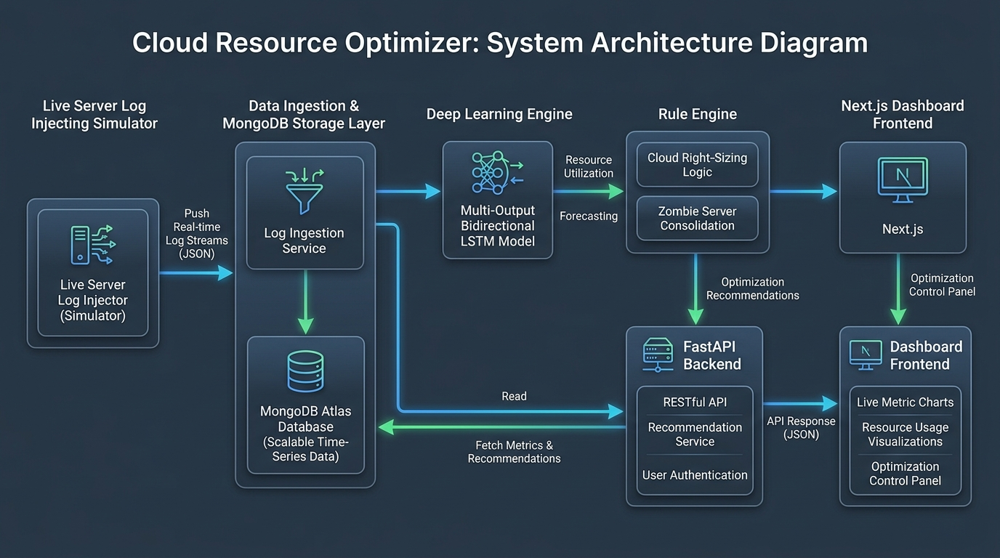

Cloud Resource Optimizer
AI-driven predictive scaling and resource consolidation for cloud infrastructure.
1. Project Overview
The Cloud Resource Optimizer is an intelligent system designed to reduce cloud computing costs by predicting future CPU and memory usage of servers. By analyzing historical telemetry data, the system identifies underutilized resources, predicts future workloads, and recommends downsizing or decommissioning instances.
Phase 1 (Current): The current build serves as a demo, predicting usage based on historical telemetry CSV datasets (Bitbrains dataset).
Phase 2 (Final): The final project will implement a live server log injecting simulator, fetching and processing live client server logs for real-time predictions and visualizations.
2. Literature Review
The field of cloud resource optimization has evolved significantly, transitioning from reactive threshold-based methods to proactive, AI-driven forecasting. This project builds upon several key areas of research:
1. Traditional Reactive Auto-Scaling
Historically, cloud providers relied on simple rule-based scaling (e.g., "scale up if CPU > 80%"). Research by Lorido-Botran et al. (2014) highlighted that reactive systems suffer from cold-start delays, leading to degraded performance during sudden traffic spikes, or excessive costs when scaling down too slowly.
2. Statistical Time-Series Analysis
To move towards proactive scaling, statistical models like ARIMA (AutoRegressive Integrated Moving Average) were introduced. While effective for linear trends, studies such as Calheiros et al. (2015) demonstrated that these models struggle to capture the non-linear, highly volatile, and cyclical nature of modern web workloads.
3. Deep Learning & LSTMs in Cloud Computing
Recent literature heavily favors Recurrent Neural Networks (RNNs) and specifically Long Short-Term Memory (LSTM) networks for workload prediction. LSTMs solve the "vanishing gradient" problem of standard RNNs, allowing them to remember long-term dependencies. A landmark study by Kumar et al. (2018) proved that LSTMs significantly outperform ARIMA in predicting CPU utilization on the Bitbrains dataset. Our project extends this research by implementing a Bidirectional LSTM with a Multi-Output head to simultaneously forecast both CPU and Memory, bridging the gap between theoretical ML accuracy and practical business logic.
3. Technologies Used
Backend
- FastAPI (Python): High-performance async framework for the API layer, chosen for its speed and native support for data validation.
- TensorFlow & Keras: Used to build and train the deep learning predictive models.
- Pandas, NumPy, Scikit-Learn: Essential data processing, scaling (MinMaxScaler), and numerical analysis libraries.
Frontend
- Next.js (React): Server-side rendered React framework ensuring fast load times and a robust component architecture.
- Tailwind CSS: Utility-first CSS framework for rapid and modern UI styling.
- Recharts: Composable charting library for rendering complex time-series forecast visualizations.
Database
- MongoDB: A NoSQL document database. Selected for its flexibility in handling unstructured or semi-structured telemetry data and server logs securely and efficiently.
4. System Architecture, Algorithms & Workflow
Project Workflow
The application follows a seamless, real-time data flow from the client interface down to the AI model and back. Below is the step-by-step workflow of the system:
MinMaxScaler.
ml_engine.py runs an autoregressive loop on the Bidirectional LSTM model, generating 48 future time steps for both CPU and Memory.
rule_engine.py analyzes the predictions, categorizes the server (Active, Right-size, Zombie), and calculates exact USD savings.
Final System Architecture Diagram
The diagram below showcases the end-to-end target architecture of the project, highlighting the Live Server Log Injecting Simulator feeding real-time metric streams into MongoDB, processed asynchronously by FastAPI, the Bidirectional LSTM Engine, and the Optimization Rule Engine:

Architecture & Algorithms
The system operates through a streamlined data pipeline connecting the machine learning engine to a rule-based decision module.
Multi-Output Bidirectional LSTM
The core intelligence is powered by a Bidirectional Stacked LSTM (Long Short-Term Memory) neural network. Instead of analyzing time sequentially, a bidirectional LSTM analyzes the data in both directions (past to future and future to past), capturing complex cyclical patterns in server workloads.
- Inputs: The model ingests a sliding window of the last 24 timesteps of CPU percentage and Memory (KB).
- Outputs: It utilizes a multi-output architecture to simultaneously predict future steps for both CPU and Memory.
- Residual Wave Processing: A high-frequency residual wave offset is applied to predictions to accurately simulate micro-variances seen in real server environments.
Optimization Rule Engine
Predictions generated by the ML model are passed to the rule_engine.py, which categorizes instances to compute monthly cost savings:
// Pseudocode of the Rule Engine Logic
if (avg_cpu >= 25% OR peak_cpu >= 50%) {
status = "ACTIVE";
recommendation = "Optimal Sizing (c5.xlarge) - High Utilization";
} else if (avg_cpu >= 8%) {
status = "RIGHT-SIZE";
recommendation = "Downsize to t3.micro";
savings = "$110.00 / month";
} else {
status = "CONSOLIDATE & SHUT DOWN";
recommendation = "Decommission Instance (Zombie Server)";
savings = "$146.00 / month";
}5. Deep Dive: Code Walkthrough
This section provides a detailed, step-by-step explanation of the core files in the backend. You will learn how the data is prepared, how the LSTM model is constructed, and how the business logic interprets the AI predictions.
A. Model Training (train_lstm.py)
This file is responsible for ingesting server logs and training the Bidirectional LSTM model.
1. Data Preparation & Windowing
def create_sequences_multi_output(data, seq_len, stride=3):
n = len(data)
indices = np.arange(0, n - seq_len, stride)
X = np.array([data[i : i + seq_len] for i in indices], dtype=np.float32)
y = np.array([data[i + seq_len] for i in indices], dtype=np.float32)
return X, y- Concept: Time-series forecasting requires converting sequential data into a supervised learning format.
- Explanation: The
create_sequences_multi_outputfunction creates sliding windows. For every 24 steps (seq_len), the model uses them to predict the 25th step (both CPU and Memory). Thestride=3means the window jumps forward 3 steps at a time to reduce data redundancy.
2. The Neural Network Architecture
model = Sequential([
Bidirectional(LSTM(128, return_sequences=True), input_shape=(SEQ_LEN, 2)),
Dropout(0.2),
LSTM(64, return_sequences=False),
Dropout(0.2),
Dense(32, activation='swish'),
Dense(2) # Multi-Output Target: [CPU %, Memory KB]
])- Bidirectional LSTM: Wrapping an LSTM in a
Bidirectionallayer allows the network to process the sequence forwards and backwards, helping it understand context and cyclical spikes better. - Dropout Layers:
Dropout(0.2)randomly turns off 20% of the neurons during training to prevent the model from memorizing the data (overfitting). - Dense(2): The final output layer has exactly 2 neurons because we are predicting two variables simultaneously: future CPU and Memory.
B. Real-Time Inference (ml_engine.py)
Once trained, the FastAPI server uses this file to make live predictions when a client requests them.
Autoregressive Prediction Loop
for i in range(future_steps):
input_seq = current_window.reshape(1, SEQ_LEN, 2)
preds_scaled = self.model.predict(input_seq, verbose=0)[0]
# Extract the 2D predictions (CPU & Mem)
pred_cpu_s, pred_mem_s = float(preds_scaled[0]), float(preds_scaled[1])
# Feed prediction back into sliding window
new_row = np.array([[pred_cpu_s, pred_mem_s]])
current_window = np.vstack([current_window[1:], new_row])- Concept: Autoregressive forecasting means using your own predictions to make future predictions.
- Explanation: The model predicts the very next step. We take that prediction, append it to the end of our 24-step window, and drop the oldest step (
current_window[1:]). We repeat this loop 48 times (future_steps) to forecast far into the future.
C. The Business Logic (rule_engine.py)
AI predictions are useless without business logic. The Rule Engine categorizes servers based on the predictions to compute financial savings.
if avg_cpu >= 25.0 or peak_cpu >= 50.0:
status = "ACTIVE"
action = "Optimal Sizing (c5.xlarge) - High Utilization"
elif avg_cpu >= 8.0:
status = "RIGHT-SIZE"
action = "Right-size Tier (c5.large -> t3.micro)"
monthly_savings = 110.00
else:
status = "CONSOLIDATE & SHUT DOWN"
action = "Decommission Instance"
monthly_savings = 146.00- Explanation: This is a deterministic rule set. If a server averages less than 8% CPU, the system flags it as a "Zombie" server that should be shut down, instantly calculating a savings of $146.00 per month. If it's lightly used (between 8% and 25%), it recommends downsizing the AWS instance type to save $110.00.
6. How to Run the Project
Follow these step-by-step instructions to run both the FastAPI backend and Next.js frontend locally. Everything runs locally and no external API keys are required.
Prerequisites
- Python 3.8+
- Node.js (v18+) and npm/yarn/pnpm
- MongoDB (running locally on default port 27017)
Backend Setup
# 1. Navigate to the backend directory
cd cloud-resource-optimizer/backend
# 2. Create and activate a virtual environment
python -m venv venv
source venv/bin/activate # On Windows: venv\Scripts\activate
# 3. Install dependencies
pip install -r requirements.txt
# 4. Start the FastAPI server
uvicorn app.main:app --reloadFrontend Setup
# 1. Navigate to the frontend directory
cd cloud-resource-optimizer/frontend
# 2. Install dependencies
npm install
# 3. Start the Next.js development server
npm run devOnce running, access the web interface at http://localhost:3000.
7. Learning Lessons & Takeaways
Developing the Cloud Resource Optimizer offered profound insights into merging deep learning with full-stack engineering:
- LSTM Complexity & Hurdles: Building and tuning the Multi-Output Bidirectional LSTM model was a significant hurdle. Ensuring that the neural network accurately predicted both CPU and Memory simultaneously without overfitting required careful balancing of layers, dropout rates, and learning rates using the
AdamWoptimizer. - Time-Series Data Handling: Standardizing disparate server CSV files and creating a vectorized sliding window generator was vital for high-performance training. Handling the complex input sequence shapes reinforced best practices in matrix transformations and data scaling.
- Actionable AI & Business Logic: The project demonstrated that raw ML predictions are most valuable when integrated with decisive business logic. By passing LSTM outputs through a deterministic Rule Engine, abstract metrics were successfully converted into tangible, real-world cloud cost savings.
8. Learning Resources
If you're new to the technologies used in this project, here are some excellent crash courses to get you started: